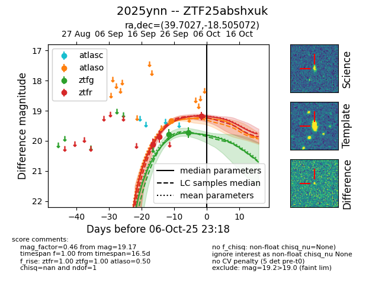
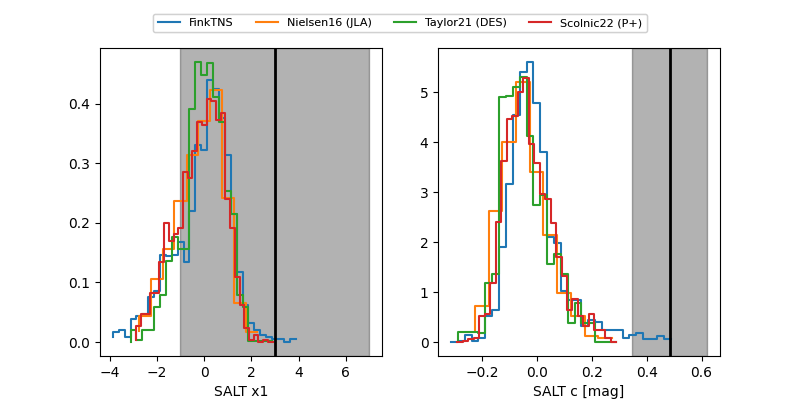

FINK: ZTF25abshxuk
Lasair: ZTF25abshxuk
ALeRCE: ZTF25abshxuk
TNS: 2025ynn
YSE: 2025ynn
ZTF25abshxuk (ztf,fink)
2025ynn (tns,yse)
equatorial (ra, dec) = (39.7027,-18.50507)
galactic (l, b) = (199.3638,-63.86435)


last atlaso=19.33, ztfg=19.73, ztfr=19.17
1 atlaso, 2 ztfg, 3 ztfr detections